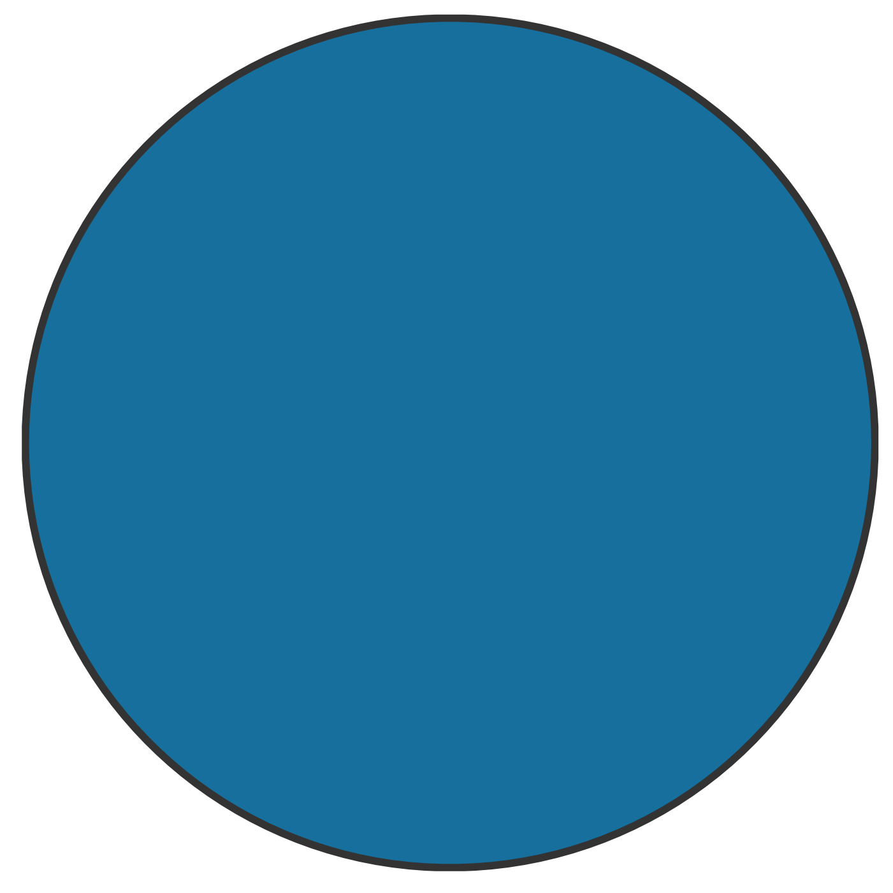

Chapter 5 Bayes Factor
To properly evaluate hypotheses with information regarding the expected direction of the effects, we use the Bayes factor with the encompassing prior approach. See the main article for a detailed introduction to this approach [TODO: add link article].
First, we define the encompassing model. Subsequently, we obtain the hypotheses matrices according to the informative hypotheses. Next, we compute the Bayes factor and, finally, we describe the selected model.
5.1 Encompassing Model
We define a Zero-Inflated Negative Binomial (ZINB) mixed-effects model to take into account the characteristics of the dependent variable and its distribution (see Section~2). Again, we consider only the role of gender as a fixed effect and children’s classroom ID as a random effect for \(p\). Whereas, regarding \(\mu\), we consider the interaction between mother and father attachment together with gender as fixed effects and children’s classroom ID as a random effect. In the R formula syntax, we have
# formula for p
p ~ gender + (1|ID_class)
# formula for mu
mu ~ gender + mother * father + (1|ID_class)5.1.1 Prior Choice
The prior choice is important for the parameters involved in the equality and inequality constraints. In our case, the parameters of interest (i.e., those related to mother and father attachment interaction) are unbounded. Thus, we can simply specify as prior a normal distribution with mean 0 and a given standard deviation. Considering the standard deviation, however, we have to choose a value so that the resulting prior is non-informative but without being excessively diffuse.
We can evaluate the consequences of different values’ choice considering the resulting prior predictions. To facilitate this step, we compute prior prediction considering only the intercept and a single parameter of interest. Remembering that the inverse link function (i.e., function that in a GLM transform the model linear prediction into the value on the original response scale) is the exponential function, we consider as intercept the value 1 because \(exp(1) \approx 2.7\) that is close to the externalizing problems sample mean 3.35. In Table~5.1, summary information about prior predictions for different standard deviation values is reported.| Prior | \(-1\) SD | \(-.5\) SD | \(+0\) SD | \(+ .5\) SD | \(+ 1\) SD |
|---|---|---|---|---|---|
| \(\mathcal{N}(0, 0.5)\) | 1.6 | 2.1 | 2.7 | 3.5 | 4.5 |
| \(\mathcal{N}(0, 1)\) | 1.0 | 1.6 | 2.7 | 4.5 | 7.4 |
| \(\mathcal{N}(0, 3)\) | 0.1 | 0.6 | 2.7 | 12.2 | 54.6 |
| \(\mathcal{N}(0, 5)\) | 0.0 | 0.2 | 2.7 | 33.1 | 403.4 |
| \(\mathcal{N}(0, 10)\) | 0.0 | 0.0 | 2.7 | 403.4 | 59874.1 |
Considering that externalizing problems are bounded between 0 and 20, a reasonable prior is \(\mathcal{N}(0,3)\). With these settings, prior predicted values cover all possible values without including excessively large values. More diffuse priors would result in values with a higher order of magnitude and tighter priors would exclude plausible values. The influence of prior specification will be subsequently evaluated in a prior sensitivity analysis.
Regarding the other nuisance parameters (i.e., intercepts, random effects and shapes parameters) brms default priors are maintained. The resulting prior settings are
## prior class coef group resp dpar nlpar bound source
## normal(0, 3) b user
## normal(0, 3) b fatherAnxious (vectorized)
## normal(0, 3) b fatherAvoidant (vectorized)
## normal(0, 3) b fatherFearful (vectorized)
## normal(0, 3) b genderM (vectorized)
## normal(0, 3) b motherAnxious (vectorized)
## normal(0, 3) b motherAnxious:fatherAnxious (vectorized)
## normal(0, 3) b motherAnxious:fatherAvoidant (vectorized)
## normal(0, 3) b motherAnxious:fatherFearful (vectorized)
## normal(0, 3) b motherAvoidant (vectorized)
## normal(0, 3) b motherAvoidant:fatherAnxious (vectorized)
## normal(0, 3) b motherAvoidant:fatherAvoidant (vectorized)
## normal(0, 3) b motherAvoidant:fatherFearful (vectorized)
## normal(0, 3) b motherFearful (vectorized)
## normal(0, 3) b motherFearful:fatherAnxious (vectorized)
## normal(0, 3) b motherFearful:fatherAvoidant (vectorized)
## normal(0, 3) b motherFearful:fatherFearful (vectorized)
## normal(0, 3) b zi (vectorized)
## normal(0, 3) b genderM zi (vectorized)
## student_t(3, 0.7, 2.5) Intercept default
## logistic(0, 1) Intercept zi default
## student_t(3, 0, 2.5) sd default
## student_t(3, 0, 2.5) sd zi default
## student_t(3, 0, 2.5) sd ID_class (vectorized)
## student_t(3, 0, 2.5) sd Intercept ID_class (vectorized)
## student_t(3, 0, 2.5) sd ID_class zi (vectorized)
## student_t(3, 0, 2.5) sd Intercept ID_class zi (vectorized)
## gamma(0.01, 0.01) shape default5.1.2 Posterior
The encompassing model is estimated using 6 independent chains with 10,000 iterations (warm-up 2,000). To do that we use the brm() function from the brms R-package (Bürkner, 2017, 2018), which is based on STAN (Stan Development Team, 2020). Summary of the encompassing model is presented below.
## Family: zero_inflated_negbinomial
## Links: mu = log; shape = identity; zi = logit
## Formula: externalizing_sum ~ gender + mother * father + (1 | ID_class)
## zi ~ gender + (1 | ID_class)
## Data: data (Number of observations: 847)
## Samples: 6 chains, each with iter = 10000; warmup = 2000; thin = 1;
## total post-warmup samples = 48000
##
## Group-Level Effects:
## ~ID_class (Number of levels: 50)
## Estimate Est.Error l-95% CI u-95% CI Rhat Bulk_ESS Tail_ESS
## sd(Intercept) 0.30 0.07 0.17 0.45 1.00 14161 20827
## sd(zi_Intercept) 1.14 0.29 0.68 1.82 1.00 22361 31673
##
## Population-Level Effects:
## Estimate Est.Error l-95% CI u-95% CI Rhat Bulk_ESS Tail_ESS
## Intercept 0.98 0.13 0.72 1.24 1.00 35521 38291
## zi_Intercept -1.33 0.33 -2.09 -0.78 1.00 36797 30278
## genderM 0.32 0.08 0.16 0.49 1.00 81905 36734
## motherAnxious 0.32 0.19 -0.05 0.70 1.00 39619 37732
## motherAvoidant 0.17 0.26 -0.33 0.69 1.00 37098 36353
## motherFearful 0.69 0.41 -0.07 1.54 1.00 34182 30539
## fatherAnxious 0.22 0.20 -0.16 0.60 1.00 40404 38489
## fatherAvoidant -0.45 0.22 -0.87 -0.02 1.00 40412 38016
## fatherFearful 0.11 0.42 -0.69 0.96 1.00 35432 34390
## motherAnxious:fatherAnxious -0.39 0.28 -0.94 0.15 1.00 36701 36495
## motherAvoidant:fatherAnxious -0.12 0.34 -0.80 0.53 1.00 36329 36398
## motherFearful:fatherAnxious -0.43 0.51 -1.46 0.55 1.00 35084 32876
## motherAnxious:fatherAvoidant 0.33 0.29 -0.25 0.89 1.00 36157 37830
## motherAvoidant:fatherAvoidant 0.61 0.34 -0.06 1.26 1.00 34169 35603
## motherFearful:fatherAvoidant 0.30 0.48 -0.68 1.20 1.00 32533 31702
## motherAnxious:fatherFearful -0.06 0.48 -1.02 0.86 1.00 34008 34560
## motherAvoidant:fatherFearful 0.09 0.57 -1.04 1.19 1.00 34795 33933
## motherFearful:fatherFearful -0.26 0.60 -1.48 0.86 1.00 30725 30729
## zi_genderM -0.78 0.29 -1.38 -0.23 1.00 70555 35796
##
## Family Specific Parameters:
## Estimate Est.Error l-95% CI u-95% CI Rhat Bulk_ESS Tail_ESS
## shape 1.63 0.24 1.22 2.14 1.00 34643 32767
##
## Samples were drawn using sampling(NUTS). For each parameter, Bulk_ESS
## and Tail_ESS are effective sample size measures, and Rhat is the potential
## scale reduction factor on split chains (at convergence, Rhat = 1).5.2 Hypothesis Matrices
For each informative hypothesis, we obtain a hypothesis matrix that translates equality and inequality constraints according to the encompassing model parametrization. Formalization of informative hypotheses and the procedure to derive hypothesis matrices are described in the main paper ([TODO: add link]).
Here we present the obtained hypothesis matrices where on the columns we have the parameters of the encompassing model (excluding the intercept) and each row expresses an equality constraint or an inequality constraint. Matrices’ row names follow this notation: names without square brackets indicate a constraint directly on the model parameter; names within square brackets indicate a group condition (that could be the resulting composition of more parameters). For example, "M_Avoidant:F_Anxious" indicates the actual interaction term of the model, whereas "[M_Avoidant_F_Anxious]" indicates the group condition. This is done because when assuming no interaction or no father attachment effect we set constraints directly on the model parameters, instead, when constraints involve group comparisons, we need to obtain the resulting conditions. Equality and inequality constraints are presented separately.
Null Hypothesis
- Equality matrix, \(R_{iE} = 0\) (each row is set to zero).
## M_Anxious M_Avoidant M_Fearful F_Anxious F_Avoidant F_Fearful M_Anxious:F_Anxious M_Avoidant:F_Anxious M_Fearful:F_Anxious M_Anxious:F_Avoidant M_Avoidant:F_Avoidant M_Fearful:F_Avoidant M_Anxious:F_Fearful M_Avoidant:F_Fearful M_Fearful:F_Fearful
## M_Anxious 1 0 0 0 0 0 0 0 0 0 0 0 0 0 0
## M_Avoidant 0 1 0 0 0 0 0 0 0 0 0 0 0 0 0
## M_Fearful 0 0 1 0 0 0 0 0 0 0 0 0 0 0 0
## F_Anxious 0 0 0 1 0 0 0 0 0 0 0 0 0 0 0
## F_Avoidant 0 0 0 0 1 0 0 0 0 0 0 0 0 0 0
## F_Fearful 0 0 0 0 0 1 0 0 0 0 0 0 0 0 0
## M_Anxious:F_Anxious 0 0 0 0 0 0 1 0 0 0 0 0 0 0 0
## M_Avoidant:F_Anxious 0 0 0 0 0 0 0 1 0 0 0 0 0 0 0
## M_Fearful:F_Anxious 0 0 0 0 0 0 0 0 1 0 0 0 0 0 0
## M_Anxious:F_Avoidant 0 0 0 0 0 0 0 0 0 1 0 0 0 0 0
## M_Avoidant:F_Avoidant 0 0 0 0 0 0 0 0 0 0 1 0 0 0 0
## M_Fearful:F_Avoidant 0 0 0 0 0 0 0 0 0 0 0 1 0 0 0
## M_Anxious:F_Fearful 0 0 0 0 0 0 0 0 0 0 0 0 1 0 0
## M_Avoidant:F_Fearful 0 0 0 0 0 0 0 0 0 0 0 0 0 1 0
## M_Fearful:F_Fearful 0 0 0 0 0 0 0 0 0 0 0 0 0 0 1- Inequality matrix, \(R_{iI} > 0\) (each row is set greater than zero). There are no inequality constraints.
Monotropy Hypothesis
- Equality matrix, \(R_{iE} = 0\) (each row is set to zero).
## M_Anxious M_Avoidant M_Fearful F_Anxious F_Avoidant F_Fearful M_Anxious:F_Anxious M_Avoidant:F_Anxious M_Fearful:F_Anxious M_Anxious:F_Avoidant M_Avoidant:F_Avoidant M_Fearful:F_Avoidant M_Anxious:F_Fearful M_Avoidant:F_Fearful M_Fearful:F_Fearful
## [M_Anx_F_Sec - M_Av_F_Sec] 1 -1 0 0 0 0 0 0 0 0 0 0 0 0 0
## F_Anxious 0 0 0 1 0 0 0 0 0 0 0 0 0 0 0
## F_Avoidant 0 0 0 0 1 0 0 0 0 0 0 0 0 0 0
## F_Fearful 0 0 0 0 0 1 0 0 0 0 0 0 0 0 0
## M_Anxious:F_Anxious 0 0 0 0 0 0 1 0 0 0 0 0 0 0 0
## M_Avoidant:F_Anxious 0 0 0 0 0 0 0 1 0 0 0 0 0 0 0
## M_Fearful:F_Anxious 0 0 0 0 0 0 0 0 1 0 0 0 0 0 0
## M_Anxious:F_Avoidant 0 0 0 0 0 0 0 0 0 1 0 0 0 0 0
## M_Avoidant:F_Avoidant 0 0 0 0 0 0 0 0 0 0 1 0 0 0 0
## M_Fearful:F_Avoidant 0 0 0 0 0 0 0 0 0 0 0 1 0 0 0
## M_Anxious:F_Fearful 0 0 0 0 0 0 0 0 0 0 0 0 1 0 0
## M_Avoidant:F_Fearful 0 0 0 0 0 0 0 0 0 0 0 0 0 1 0
## M_Fearful:F_Fearful 0 0 0 0 0 0 0 0 0 0 0 0 0 0 1- Inequality matrix, \(R_{iI} > 0\) (each row is set greater than zero).
## M_Anxious M_Avoidant M_Fearful F_Anxious F_Avoidant F_Fearful M_Anxious:F_Anxious M_Avoidant:F_Anxious M_Fearful:F_Anxious M_Anxious:F_Avoidant M_Avoidant:F_Avoidant M_Fearful:F_Avoidant M_Anxious:F_Fearful M_Avoidant:F_Fearful M_Fearful:F_Fearful
## [M_Anx_F_Sec] 1 0 0 0 0 0 0 0 0 0 0 0 0 0 0
## [M_Fear_F_Sec - M_Av_F_Sec] 0 -1 1 0 0 0 0 0 0 0 0 0 0 0 0Hierarchy Hypothesis
- Equality matrix, \(R_{iE} = 0\) (each row is set to zero).
## M_Anxious M_Avoidant M_Fearful F_Anxious F_Avoidant F_Fearful M_Anxious:F_Anxious M_Avoidant:F_Anxious M_Fearful:F_Anxious M_Anxious:F_Avoidant M_Avoidant:F_Avoidant M_Fearful:F_Avoidant M_Anxious:F_Fearful M_Avoidant:F_Fearful M_Fearful:F_Fearful
## [M_Anx_F_Sec - M_Av_F_Sec] 1 -1 0 0 0 0 0 0 0 0 0 0 0 0 0
## [M_Sec_F_Anx - M_Sec_F_Av] 0 0 0 1 -1 0 0 0 0 0 0 0 0 0 0
## M_Anxious:F_Anxious 0 0 0 0 0 0 1 0 0 0 0 0 0 0 0
## M_Avoidant:F_Anxious 0 0 0 0 0 0 0 1 0 0 0 0 0 0 0
## M_Fearful:F_Anxious 0 0 0 0 0 0 0 0 1 0 0 0 0 0 0
## M_Anxious:F_Avoidant 0 0 0 0 0 0 0 0 0 1 0 0 0 0 0
## M_Avoidant:F_Avoidant 0 0 0 0 0 0 0 0 0 0 1 0 0 0 0
## M_Fearful:F_Avoidant 0 0 0 0 0 0 0 0 0 0 0 1 0 0 0
## M_Anxious:F_Fearful 0 0 0 0 0 0 0 0 0 0 0 0 1 0 0
## M_Avoidant:F_Fearful 0 0 0 0 0 0 0 0 0 0 0 0 0 1 0
## M_Fearful:F_Fearful 0 0 0 0 0 0 0 0 0 0 0 0 0 0 1- Inequality matrix, \(R_{iI} > 0\) (each row is set greater than zero).
## M_Anxious M_Avoidant M_Fearful F_Anxious F_Avoidant F_Fearful M_Anxious:F_Anxious M_Avoidant:F_Anxious M_Fearful:F_Anxious M_Anxious:F_Avoidant M_Avoidant:F_Avoidant M_Fearful:F_Avoidant M_Anxious:F_Fearful M_Avoidant:F_Fearful M_Fearful:F_Fearful
## [M_Anx_F_Sec] 1 0 0 0 0 0 0 0 0 0 0 0 0 0 0
## [M_Fear_F_Sec - M_Av_F_Sec] 0 -1 1 0 0 0 0 0 0 0 0 0 0 0 0
## [M_Sec_F_Anx] 0 0 0 1 0 0 0 0 0 0 0 0 0 0 0
## [M_Sec_F_Fear - M_Sec_F_Av] 0 0 0 0 -1 1 0 0 0 0 0 0 0 0 0
## [M_Anx_F_Sec - M_Sec_F_Anx] 1 0 0 -1 0 0 0 0 0 0 0 0 0 0 0
## [M_Av_F_Sec - M_Sec_F_Av] 0 1 0 0 -1 0 0 0 0 0 0 0 0 0 0
## [M_Fear_F_Sec - M_Sec_F_Fear] 0 0 1 0 0 -1 0 0 0 0 0 0 0 0 0Independence Hypothesis
- Equality matrix, \(R_{iE} = 0\) (each row is set to zero).
## M_Anxious M_Avoidant M_Fearful F_Anxious F_Avoidant F_Fearful M_Anxious:F_Anxious M_Avoidant:F_Anxious M_Fearful:F_Anxious M_Anxious:F_Avoidant M_Avoidant:F_Avoidant M_Fearful:F_Avoidant M_Anxious:F_Fearful M_Avoidant:F_Fearful M_Fearful:F_Fearful
## [M_Anx_F_Sec - M_Av_F_Sec] 1 -1 0 0 0 0 0 0 0 0 0 0 0 0 0
## M_Anxious:F_Anxious 0 0 0 0 0 0 1 0 0 0 0 0 0 0 0
## M_Avoidant:F_Anxious 0 0 0 0 0 0 0 1 0 0 0 0 0 0 0
## M_Fearful:F_Anxious 0 0 0 0 0 0 0 0 1 0 0 0 0 0 0
## M_Anxious:F_Avoidant 0 0 0 0 0 0 0 0 0 1 0 0 0 0 0
## M_Avoidant:F_Avoidant 0 0 0 0 0 0 0 0 0 0 1 0 0 0 0
## M_Fearful:F_Avoidant 0 0 0 0 0 0 0 0 0 0 0 1 0 0 0
## M_Anxious:F_Fearful 0 0 0 0 0 0 0 0 0 0 0 0 1 0 0
## M_Avoidant:F_Fearful 0 0 0 0 0 0 0 0 0 0 0 0 0 1 0
## M_Fearful:F_Fearful 0 0 0 0 0 0 0 0 0 0 0 0 0 0 1- Inequality matrix, \(R_{iI} > 0\) (each row is set greater than zero).
## M_Anxious M_Avoidant M_Fearful F_Anxious F_Avoidant F_Fearful M_Anxious:F_Anxious M_Avoidant:F_Anxious M_Fearful:F_Anxious M_Anxious:F_Avoidant M_Avoidant:F_Avoidant M_Fearful:F_Avoidant M_Anxious:F_Fearful M_Avoidant:F_Fearful M_Fearful:F_Fearful
## [M_Anx_F_Sec] 1 0 0 0 0 0 0 0 0 0 0 0 0 0 0
## [M_Fear_F_Sec - M_Av_F_Sec] 0 -1 1 0 0 0 0 0 0 0 0 0 0 0 0
## [M_Sec_F_Anx] 0 0 0 1 0 0 0 0 0 0 0 0 0 0 0
## [M_Sec_F_Av - M_Sec_F_Anx] 0 0 0 -1 1 0 0 0 0 0 0 0 0 0 0
## [M_Sec_F_Fear - M_Sec_F_Av] 0 0 0 0 -1 1 0 0 0 0 0 0 0 0 0Integration Hypothesis
- Equality matrix, \(R_{iE} = 0\) (each row is set to zero).
## M_Anxious M_Avoidant M_Fearful F_Anxious F_Avoidant F_Fearful M_Anxious:F_Anxious M_Avoidant:F_Anxious M_Fearful:F_Anxious M_Anxious:F_Avoidant M_Avoidant:F_Avoidant M_Fearful:F_Avoidant M_Anxious:F_Fearful M_Avoidant:F_Fearful M_Fearful:F_Fearful
## [M_Anx_F_Sec - M_Av_F_Sec] 1 -1 0 0 0 0 0 0 0 0 0 0 0 0 0
## [M_Anx_F_Sec - M_Sec_F_Anx] 1 0 0 -1 0 0 0 0 0 0 0 0 0 0 0
## [M_Anx_F_Sec - M_Sec_F_Av] 1 0 0 0 -1 0 0 0 0 0 0 0 0 0 0
## [M_Anx_F_Anx - M_Anx_F_Av] 0 0 0 1 -1 0 1 0 0 -1 0 0 0 0 0
## [M_Anx_F_Anx - M_Av_F_Anx] 1 -1 0 0 0 0 1 -1 0 0 0 0 0 0 0
## [M_Anx_F_Anx - M_Av_F_Av] 1 -1 0 1 -1 0 1 0 0 0 -1 0 0 0 0
## [M_Fear_F_Anx - M_Fear_F_Av] 0 0 0 1 -1 0 0 0 1 0 0 -1 0 0 0
## [M_Fear_F_Anx - M_Anx_F_Fear] -1 0 1 1 0 -1 0 0 1 0 0 0 -1 0 0
## [M_Fear_F_Anx - M_Av_F_Fear] 0 -1 1 1 0 -1 0 0 1 0 0 0 0 -1 0- Inequality matrix, \(R_{iI} > 0\) (each row is set greater than zero).
## M_Anxious M_Avoidant M_Fearful F_Anxious F_Avoidant F_Fearful M_Anxious:F_Anxious M_Avoidant:F_Anxious M_Fearful:F_Anxious M_Anxious:F_Avoidant M_Avoidant:F_Avoidant M_Fearful:F_Avoidant M_Anxious:F_Fearful M_Avoidant:F_Fearful M_Fearful:F_Fearful
## [M_Anx_F_Sec] 1 0 0 0 0 0 0 0 0 0 0 0 0 0 0
## [M_Anx_F_Anx - M_Anx_F_Sec] 0 0 0 1 0 0 1 0 0 0 0 0 0 0 0
## [M_Fear_F_Anx - M_Anx_F_Anx] -1 0 1 0 0 0 -1 0 1 0 0 0 0 0 0
## [M_Fear_F_Fear - M_Fear_F_Anx] 0 0 0 -1 0 1 0 0 -1 0 0 0 0 0 15.3 Centering and Adjusting
So far we have specified the encompassing prior, obtained the model posterior distribution, and defined the hypotheses matrices. Now, we need to transform our parameters of interest and center the distribution on the constraints focal points of interest. We apply the following transformation \[ \beta = R\theta - r \] but we can ignore \(r\) as in all our constraints it is always a vector of zeros.
Next, we get the adjusted prior and the posterior of the transformed parameters vector \(\beta\) (i.e., the parameters that identify the constraints) for each hypothesis. The adjusted prior is given by
\[ \pi_{adj}(\beta) \sim \mathcal{N}(0, \Sigma_{\beta}) = \mathcal{N}(0, R\Sigma_{\theta}R^T). \] Note that we set the mean vector to zero. The posterior is given by the same transformation \[ Pr(\beta|Y) \sim \mathcal{N}(\hat{\beta}, \hat{\Sigma}_{\beta}) = \mathcal{N}(R\hat{\theta}-r, R\hat{\Sigma}_{\theta}R^T). \] See the main article for more details [TODO: add link].
This adjustment, however, requires the hypothesis matrix \(R\) to be full-row-rank (i.e., all constraints are linearly independent). However, this is not the case with the Hierarchy Hypothesis. To overcome this issue, we follow the solution presented in the main article. First, define \(R^*\) selecting the maximum number of independent rows. In this case, 15 contrast are independent
## M_Anxious M_Avoidant M_Fearful F_Anxious F_Avoidant F_Fearful M_Anxious:F_Anxious M_Avoidant:F_Anxious M_Fearful:F_Anxious M_Anxious:F_Avoidant M_Avoidant:F_Avoidant M_Fearful:F_Avoidant M_Anxious:F_Fearful M_Avoidant:F_Fearful M_Fearful:F_Fearful
## [M_Anx_F_Sec - M_Av_F_Sec] 1 -1 0 0 0 0 0 0 0 0 0 0 0 0 0
## [M_Sec_F_Anx - M_Sec_F_Av] 0 0 0 1 -1 0 0 0 0 0 0 0 0 0 0
## M_Anxious:F_Anxious 0 0 0 0 0 0 1 0 0 0 0 0 0 0 0
## M_Avoidant:F_Anxious 0 0 0 0 0 0 0 1 0 0 0 0 0 0 0
## M_Fearful:F_Anxious 0 0 0 0 0 0 0 0 1 0 0 0 0 0 0
## M_Anxious:F_Avoidant 0 0 0 0 0 0 0 0 0 1 0 0 0 0 0
## M_Avoidant:F_Avoidant 0 0 0 0 0 0 0 0 0 0 1 0 0 0 0
## M_Fearful:F_Avoidant 0 0 0 0 0 0 0 0 0 0 0 1 0 0 0
## M_Anxious:F_Fearful 0 0 0 0 0 0 0 0 0 0 0 0 1 0 0
## M_Avoidant:F_Fearful 0 0 0 0 0 0 0 0 0 0 0 0 0 1 0
## M_Fearful:F_Fearful 0 0 0 0 0 0 0 0 0 0 0 0 0 0 1
## [M_Anx_F_Sec] 1 0 0 0 0 0 0 0 0 0 0 0 0 0 0
## [M_Fear_F_Sec - M_Av_F_Sec] 0 -1 1 0 0 0 0 0 0 0 0 0 0 0 0
## [M_Sec_F_Anx] 0 0 0 1 0 0 0 0 0 0 0 0 0 0 0
## [M_Sec_F_Fear - M_Sec_F_Av] 0 0 0 0 -1 1 0 0 0 0 0 0 0 0 0The remaining contrasts, instead, are obtained as linear combinations of the other constraints. In particular,
# Constraint 16: [M_Anx_F_Sec - M_Sec_F_Anx]
all(R["[M_Anx_F_Sec - M_Sec_F_Anx]",] == R["[M_Anx_F_Sec]", ] - R["[M_Sec_F_Anx]", ])
## [1] TRUE
# Constraint 17: [M_Av_F_Sec - M_Sec_F_Av]
all(R["[M_Av_F_Sec - M_Sec_F_Av]",] == - R["[M_Anx_F_Sec - M_Av_F_Sec]", ] + R["[M_Sec_F_Anx - M_Sec_F_Av]", ] + R["[M_Anx_F_Sec - M_Sec_F_Anx]", ])
## [1] TRUE
# Constraint 18: [M_Fear_F_Sec - M_Sec_F_Fear]
all(R["[M_Fear_F_Sec - M_Sec_F_Fear]",] == R["[M_Av_F_Sec - M_Sec_F_Av]", ] + R["[M_Fear_F_Sec - M_Av_F_Sec]", ] - R["[M_Sec_F_Fear - M_Sec_F_Av]", ])
## [1] TRUEBefore computing the Bayes factor, note that we have a set of comparable hypotheses as it exists a common solution to the set of linear equations obtained by setting all hypothesis constraints equal to zero. The solution is the trivial solution of simply considering all parameters equal to zero. Finally, we do not need to standardize our parameters as they represent mean groups’ differences. See the main article for a detailed explanation [TODO: add link article].
5.4 Results and Sensitivity
To compute the Bayes factor we evaluate marginal densities and conditional probabilities as described in detail in the main article [TODO: add link article]. Bayes factor and posterior probability of each hypothesis are reported in Table~5.2.
| Hypothesis | Bayes Factor | Posterior Probability | |
|---|---|---|---|
| Null | 2.9e+11 | 0.01 | |
| Monotropy | 2.6e+13 | 0.98 |  |
| Hierarchy | 2.7e+11 | 0.01 | |
| Independence | 3.9e+09 | 0.00 | |
| Integration | 3.2e+09 | 0.00 |
Remember, however, that prior specification affects the Bayes factor results. Therefore, we also evaluate the results considering different prior settings. In particular, we consider as possible priors for the parameters of interest:
- \(\mathcal{N}(0,.5)\) - unreasonable tight prior
- \(\mathcal{N}(0,1)\) - tighter prior
- \(\mathcal{N}(0,3)\) - original prior
- \(\mathcal{N}(0,5)\) - more diffuse prior
- \(\mathcal{N}(0,10)\) - unreasonably diffuse prior
The results of the prior sensitivity analysis are reported in Table~5.3.
| Hypothesis | BF | PP | BF | PP | BF | PP | BF | PP | BF | PP |
|---|---|---|---|---|---|---|---|---|---|---|
| Null | 8.2e+01 | 0.00 | 9.4e+04 | 0.00 | 2.9e+11 | 0.01 | 4.7e+14 | 0.03 | 1.5e+19 | 0.11 |
| Monotropy | 1.2e+05 | 0.67 | 6.3e+07 | 0.90 | 2.6e+13 | 0.98 | 1.6e+16 | 0.97 | 1.2e+20 | 0.89 |
| Hierarchy | 4.9e+04 | 0.28 | 6.1e+06 | 0.09 | 2.7e+11 | 0.01 | 6.7e+13 | 0.00 | 1.2e+17 | 0.00 |
| Independence | 4.4e+03 | 0.02 | 2.6e+05 | 0.00 | 3.9e+09 | 0.00 | 5.8e+11 | 0.00 | 5.1e+14 | 0.00 |
| Integration | 4.6e+03 | 0.03 | 3.3e+05 | 0.00 | 3.2e+09 | 0.00 | 3.3e+11 | 0.00 | 1.5e+14 | 0.00 |
Overall results consistently indicate the Monotropy Hypothesis as the most supported by the data. However, we can observe two distinct patterns. As the prior gets more diffuse, the order of magnitude of the Bayes factor comparing each hypothesis with the encompassing model increases. Moreover, the probability of the Null Hypothesis increases with more diffuse prior, whereas the probabilities of the Hierarchy, Independence and Integration Hypothesis increases with tighter priors.
To interpret these patterns, remember that order constraints are insensitive to the distribution specification as long as the distribution is symmetric and centred on the constraint focal point. On the contrary, equality constraints are highly affected by the prior definition (see the main article for more details [TODO: add link article]).
All the defined hypotheses include equality constraints. Thus, for more diffuse prior we observe that the order of magnitude of the Bayes factor comparing each hypothesis with the encompassing model increases. Moreover, the hypothesis with a higher number of equality constraints (e.g., Null Hypothesis) will be favoured over hypotheses with a smaller number of equality constraints (e.g., Hierarchy, Independence and Integration Hypothesis).
5.5 Selected Model
One of the limits of the Bayes factor with the encompassing prior approach is that we only get the selected hypothesis but we do not obtain the actual estimates of the parameters posterior. To overcome this limit we rely on Bayesian inference that allows us to effectively estimate the model parameter posteriors.
This time in the model we consider only the role of gender and mother attachment as fixed effects of \(\mu\). In the R formula syntax, we have
# formula for p
p ~ gender + (1|ID_class)
# formula for mu
mu ~ gender + mother + (1|ID_class)Again, we specify a normal distribution with mean 0 and standard deviation of 3, \(\mathcal{N}(0,3)\), as prior for the beta parameters (i.e., those related to gender and mother attachment). Whereas, for the other nuisance parameters (i.e., intercepts, random effects and shapes parameters) brms default priors are maintained. The resulting prior settings are
## prior class coef group resp dpar nlpar bound source
## normal(0, 3) b user
## normal(0, 3) b genderM (vectorized)
## normal(0, 3) b motherAnxious (vectorized)
## normal(0, 3) b motherAvoidant (vectorized)
## normal(0, 3) b motherFearful (vectorized)
## normal(0, 3) b zi (vectorized)
## normal(0, 3) b genderM zi (vectorized)
## student_t(3, 0.7, 2.5) Intercept default
## logistic(0, 1) Intercept zi default
## student_t(3, 0, 2.5) sd default
## student_t(3, 0, 2.5) sd zi default
## student_t(3, 0, 2.5) sd ID_class (vectorized)
## student_t(3, 0, 2.5) sd Intercept ID_class (vectorized)
## student_t(3, 0, 2.5) sd ID_class zi (vectorized)
## student_t(3, 0, 2.5) sd Intercept ID_class zi (vectorized)
## gamma(0.01, 0.01) shape defaultThe model is estimated using 6 independent chains with 6,000 iterations (warm-up 2,000). The model summary is presented below.
## Family: zero_inflated_negbinomial
## Links: mu = log; shape = identity; zi = logit
## Formula: externalizing_sum ~ gender + mother + (1 | ID_class)
## zi ~ gender + (1 | ID_class)
## Data: data (Number of observations: 847)
## Samples: 6 chains, each with iter = 6000; warmup = 2000; thin = 1;
## total post-warmup samples = 24000
##
## Group-Level Effects:
## ~ID_class (Number of levels: 50)
## Estimate Est.Error l-95% CI u-95% CI Rhat Bulk_ESS Tail_ESS
## sd(Intercept) 0.29 0.07 0.17 0.43 1.00 7372 10149
## sd(zi_Intercept) 1.10 0.27 0.65 1.74 1.00 9371 12428
##
## Population-Level Effects:
## Estimate Est.Error l-95% CI u-95% CI Rhat Bulk_ESS Tail_ESS
## Intercept 0.96 0.11 0.74 1.18 1.00 14818 16592
## zi_Intercept -1.27 0.31 -1.97 -0.75 1.00 14384 12961
## genderM 0.34 0.08 0.18 0.50 1.00 30197 18984
## motherAnxious 0.25 0.10 0.05 0.46 1.00 21564 18963
## motherAvoidant 0.32 0.11 0.10 0.53 1.00 21623 19168
## motherFearful 0.54 0.14 0.28 0.81 1.00 22199 18755
## zi_genderM -0.74 0.27 -1.30 -0.22 1.00 27915 17381
##
## Family Specific Parameters:
## Estimate Est.Error l-95% CI u-95% CI Rhat Bulk_ESS Tail_ESS
## shape 1.70 0.25 1.27 2.23 1.00 15644 16568
##
## Samples were drawn using sampling(NUTS). For each parameter, Bulk_ESS
## and Tail_ESS are effective sample size measures, and Rhat is the potential
## scale reduction factor on split chains (at convergence, Rhat = 1).Figure 5.1: Marginal predicted values according to gender and mother attachment (\(n_{subj} = 847\)).
Figure 5.2: Predicted differences between mother attachment patterns (\(n_{subj} = 847\)).
Overall, results indicate that Males have more externalizing problems than Females. Regarding mother attachment, Fearful, Avoidant, and Anxious children have more problems than Secure children. Moreover, Fearful children have more problems than Anxious children.
To evaluate the fit of the model to the data, we computed the Bayesian \(R^2\), using the function brms::bayes_R2(), and we present Posterior Predictions in Figure~5.3.
r2_ext
## Estimate Est.Error Q2.5 Q97.5
## R2 0.1482686 0.02972484 0.09435914 0.2106949
Figure 5.3: Posterior predictive check (\(n_{subj} = 847\)).
We can see that the actual variance explained by fixed effects and random effects is around 15%. Moreover, the posterior predictive check indicates a good fit to the data.
Conclusions
Considering attachment theoretical perspectives, results indicate only the role of mother attachment so we can support the Monotropy Theory.